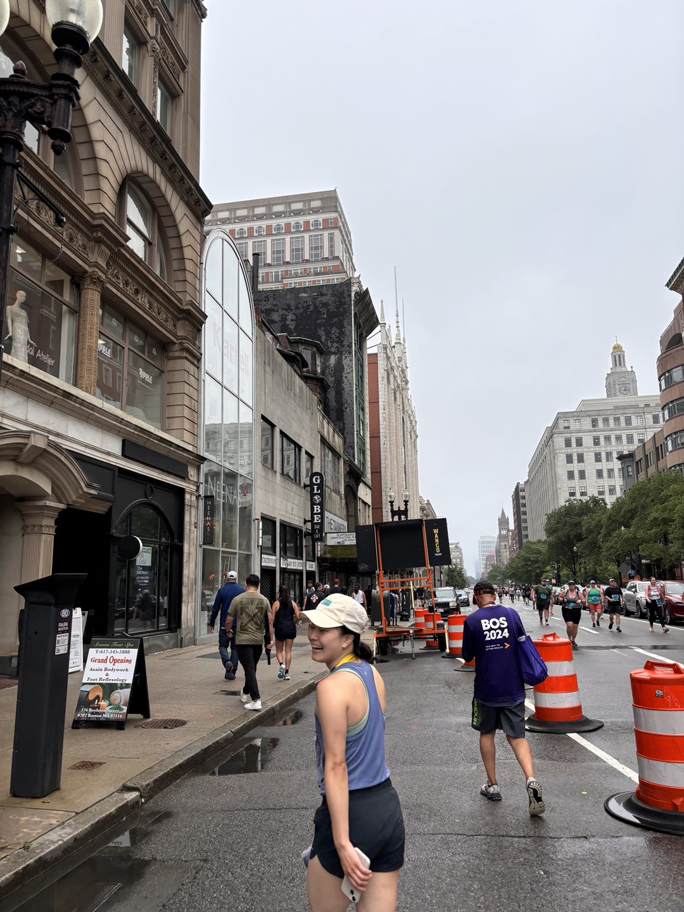

Quality Measurement
HEDIS workflows, payer data validation, discrepancy resolution, and clinical metric reporting for ACO and health plan clients.
I translate messy clinical, payer, and market data into SQL-backed dashboards, equity analyses, and strategic briefs that healthcare and business teams can act on. Six years of B2B analytics in Korea, now specialized in US population health.
I spent years as a competitive intelligence analyst for a global B2B apparel company in Seoul — building KPI pipelines, running store benchmarks, and turning supplier data into strategy decks for 80+ stakeholders. When I came to the US, I pivoted into healthcare analytics because population health is the same problem at higher stakes: fragmented data, competing stakeholders, and decisions that actually matter. That market-intelligence background is now an advantage. I ask the competitive questions most clinical analysts don't.

Boston, 2024 — also a runnerHealthcare analytics and market intelligence aren't separate tracks — they use the same core skills: define a question, find the right data, validate it rigorously, and tell a story decision-makers can use. My work lives at that intersection.
HEDIS workflows, payer data validation, discrepancy resolution, and clinical metric reporting for ACO and health plan clients.
Race and ethnicity stratification using chi-square testing to separate measurable performance gaps from statistical noise.
Leakage analysis, geographic proximity mapping, partnership impact assessment, and financial opportunity sizing.
Power BI dashboards and executive briefs that translate complex analysis into something operators can act on the same day.
Benchmarking, go-to-market analysis, survey design, and public data synthesis — EIA, ACS, Census — for strategic planning.
Each project started with a stakeholder question. These are the analyses, dashboards, and briefs that shaped the answer — from HEDIS quality gaps to market entry risk.
Translate healthcare operations requests into structured SQL queries, Power BI dashboards, and analytical briefs. Benchmark comparable business practices to identify dashboard gaps and turn external comparisons into adoption recommendations for clients.
Academic and competition projects built to stretch the toolkit into machine learning, experimental design, and geographic analysis — different domains, same analytical rigor.
Designed and analyzed a loyalty program experiment using ANOVA and post-hoc testing to measure the effect of reward structure on customer motivation and retention behavior.
GitHub →Compared KNN, decision tree, gradient boosting, and random forest models to predict cancellation risk and identify the conditions under which each model type breaks down.
GitHub →Exploratory data analysis and dashboard design oriented toward a non-technical stakeholder audience — how to show trends without losing the decision-relevant signal.
GitHub →Tableau-based geographic and role-type analysis of analyst job postings to help new graduates understand where to focus their search by location and industry.
GitHub →Six years of B2B competitive analytics in Seoul, two US internships in market research and population health, now building healthcare BI full-time — with a graduate degree connecting both sides.
Incline Analytics · Portsmouth, NH · Healthcare Analytics & Market Intelligence
UMass Memorial Health · Worcester, MA · Population Health & Equity Analytics
Sprague Energy · Portsmouth, NH · Market Intelligence and Research
Hansae Co., Ltd · Seoul, Korea
I'm open to full-time roles in healthcare analytics, population health, and market intelligence. Best reached directly by email — I respond the same day.